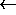

The program feedback-gennet generates network definition files for fully
recurrent networks of any size. This is not possible by using bignet.
The networks have the following structure:
- input layer with no intra layer connections
- fully recurrent hidden layer
- output layer: connections from each hidden unit to each output unit
AND
optionally fully recurrent intra layer connections in the output layer
AND
optionally feedback connections from each output unit to each hidden unit.
The activation function of the output units can be set to sigmoidal or linear.
All weights are initialized with 0.0. Other initializations should be
performed by the init functions in SNNS.
Synopsis: feedback-gennet
example:
unix> feedback-gennetproduces
Enter
input units: 3
Enter

hidden units: 3Enter output units: 1
INTRA layer connections in the output layer (y/n) :n
feedback connections from output to hidden units (y/n) :n
Linear output activation function (y/n) :n
Enter name of the network file: xor-rec.net
working...
generated xor-rec.net